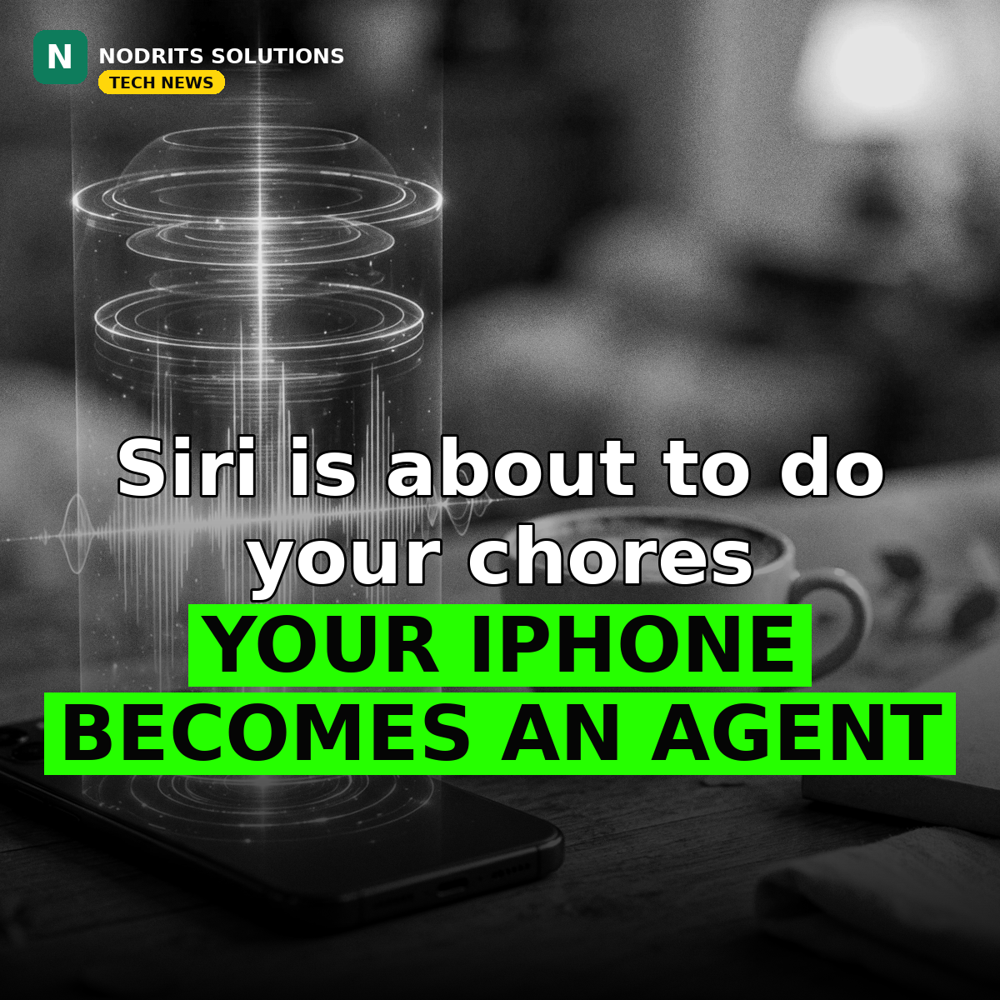

Siri Is About to Do Your Chores — Apple Is Racing to Turn It Into a Real AI Agent

Siri is about to start booking your tables and ordering your food. The Verge reported on November 8, 2026, citing Bloomberg's Mark Gurman, that Apple CEO John Ternus is pressuring AI chief Craig Federighi to accelerate Siri's roadmap into a powerful AI agent able to compete with OpenAI's Dots and Meta's Muse. These are reported roadmap details, not an Apple announcement — timings are as Bloomberg reported them.
What happened
Two upgrades are expected in the coming months, according to the report. First, fine-grained control over Apple's own apps — such as rotating and cropping photos in Photos or organizing Safari tabs — expected in iOS 27.3. Then third-party app actions in a spring release, such as booking a table via OpenTable or ordering food via Grubhub, with persistent multi-step tasks possibly arriving as early as next year. The Verge also notes Siri AI uses models developed with Google's Gemini technology.
Why it matters
The assistant war is shifting from answering questions to doing things. Siri is Apple's last big catch-up move — and if it lands, every iPhone becomes an agent platform, putting AI agents in a billion pockets overnight. The winner will not be the smartest voice, but the one that can finish the job. Siri has lagged for years; this is Apple admitting the assistant must become an agent.
What it means for you
If Siri can soon book tables and place orders, small businesses need their services reachable by voice agents — listings, booking integrations and app actions become a new form of discoverability. The businesses that are agent-ready will get the bookings. Check today whether your business can be booked or ordered through an app action, and whether your listings are complete and accurate: a voice agent will not ask twice.
The Nodrits take
Siri is about to start booking your tables and ordering your food. Would you trust a voice assistant to spend your money, or should some jobs always stay human? Tell us in the comments on today's post.
Need a website, SaaS product or AI workflow built right?
Nodrits Solutions designs, develops and automates for businesses in Pakistan, the USA, UK, UAE and Saudi Arabia.
Talk to Nodrits →Sources: The Verge, citing Bloomberg / Mark Gurman (November 8, 2026). Roadmap timings are reported, not confirmed by Apple; the Gemini-technology note is as The Verge reported it.. Published November 10, 2026.